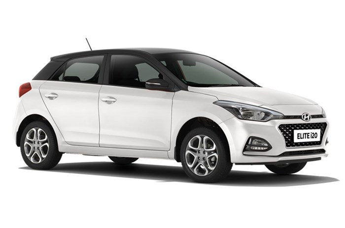

I20
- The Hyundai i20 is a supermini hatchback produced by Hyundai since 2008.
The i20 made its debut at the Paris Motor Show in October 2008, and sits between the i10 and i30.
The i20 replaces the Getz in nearly all of its markets, while several markets received the slightly larger Accent/Verna hatchback to replace it instead.
- Currently, the largest markets for the i20 are Europe and India, with two different variations being developed to cater to each market.
- The Hyundai i20 uses a completely new platform that was created at Hyundai's European technical centre in Rüsselsheim to allow Hyundai to move into Europe's highly competitive subcompact B segment. A 2,525 mm (99.4 in) wheelbase helps endow the i20 with a generous passenger cabin.
- Suspension follows the supermini norm of MacPherson struts at the front and a torsion beam rear end, with rack and pinion steering.
- A slightly upgraded version of the i20, called the iGen i20, went on sale in India in March 2012 onward with tweaked headlamps, new front grille, tail lamps and fog lamps
- It follows the "Fluidic Sculpture" design philosophy with slightly retuned engines.
A new next generation model, known as Elite i20 in India, was launched in India on 11 August 2014 and in Europe in the 2014 Paris Motor Show.
- The i20 was not sold in South Korea, North America and the Philippines as those markets have the Accent. The i20 was discontinued in the Indonesian market in 2012 due to the introduction of the Accent hatchback, which is known there as the Grand Avega
- The i20 was produced in Sriperumbudur (near Chennai), India for sale in Asia and Oceaniaand later was also assembled in Turkey (İzmit plant) for the European market by CKD kits from India
- Two of the diesel engines are 1396 cc units, one with 75 PS (55 kW; 74 hp) and 220 N⋅m (160 lb⋅ft) and the other a 90 PS (66 kW; 89 hp) and 220 N⋅m (160 lb⋅ft) high power unit.
